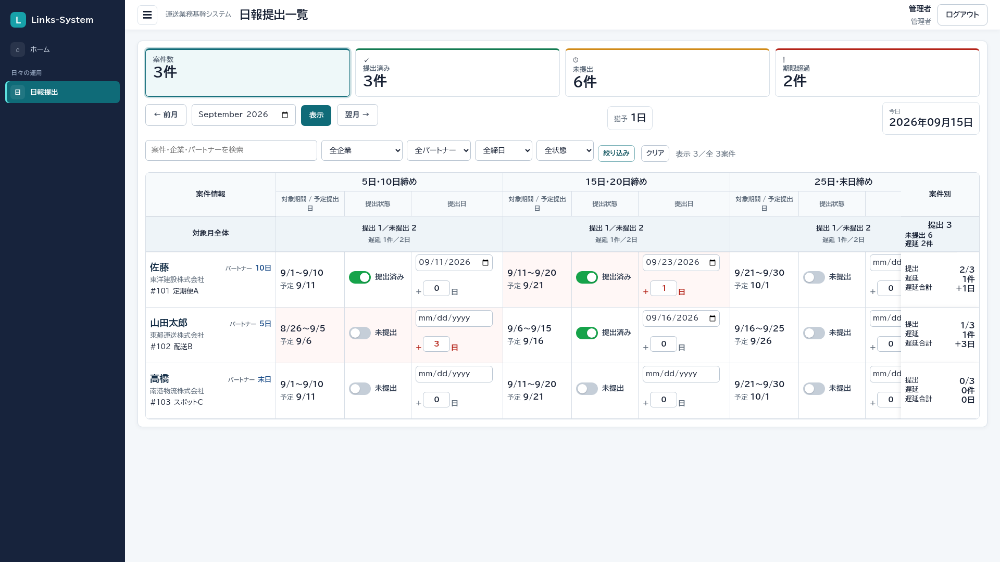

日々の運用 → 日報提出
日報提出
まず、この画面
パートナーから届いた日報の受領を、案件×月3回で見る画面です。勤務時間の入力ではありません。日報の入力件数からは自動で「提出済み」になりません。

管理者・システム担当者・総務・営業・経営者。パートナーや企業の権限には出ません。
何をどこに入れるか
| ここ | 何をするか |
|---|---|
| 提出トグル | ONにすると提出日へ今日が入る。OFFで空 |
| 提出日 | 届いた日。未来は不可。手でも直せます |
| 遅延日数 | 自動。0〜365で手修正可。トグルや提出日を変えると自動に戻る |
| 猶予日 | 全社共通。期限は提出予定日＋猶予日 |
提出予定日は、対象期間の最終日の翌日（暦日。土日祝の繰りはありません）。3サイクルとも入力対象で、「不要」セルはありません。
よくある使い方
FAXが届いたらトグルをON
該当するサイクルの提出をONにします。提出日が今日でよければそのままで、違う日なら提出日だけ直します。
気をつけること
日報入力とデータはつながっていません。入力が終わっていても、こちらをONにしなければ未提出のままです。